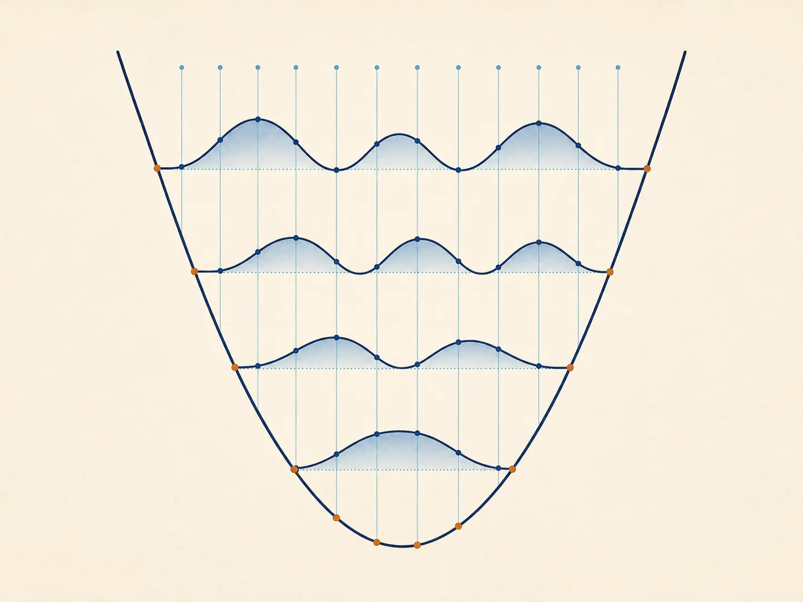
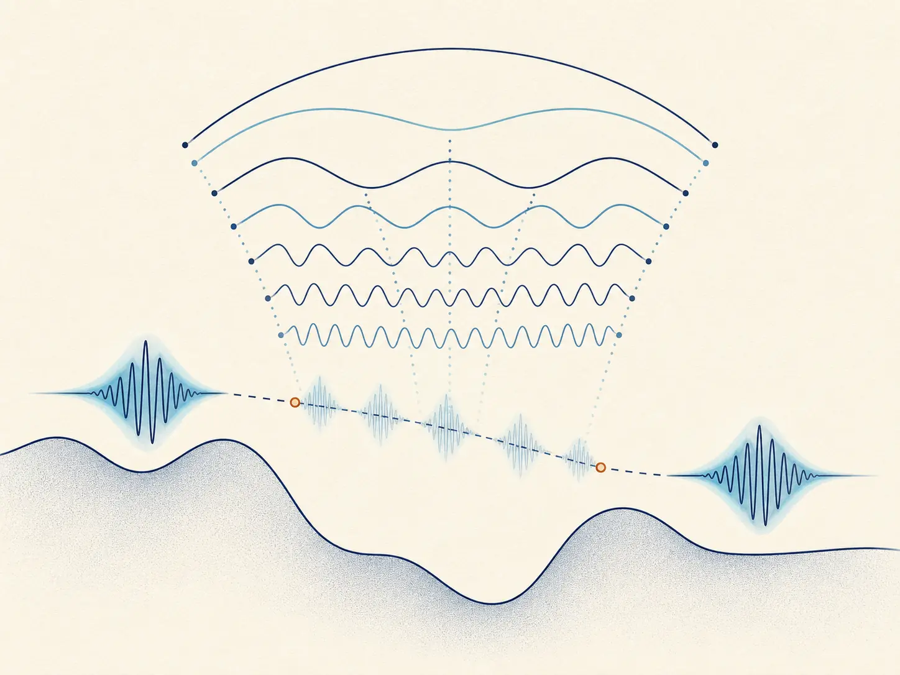
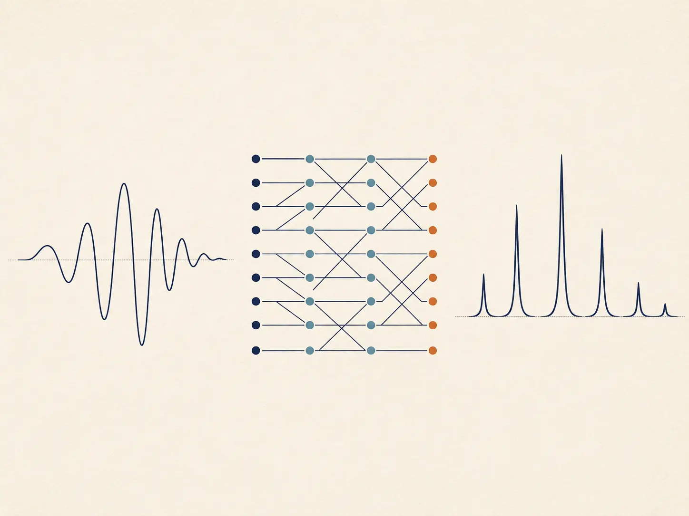
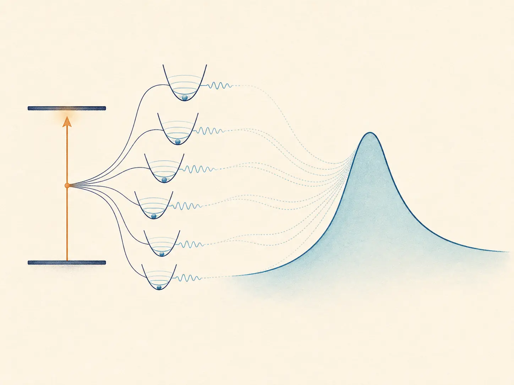
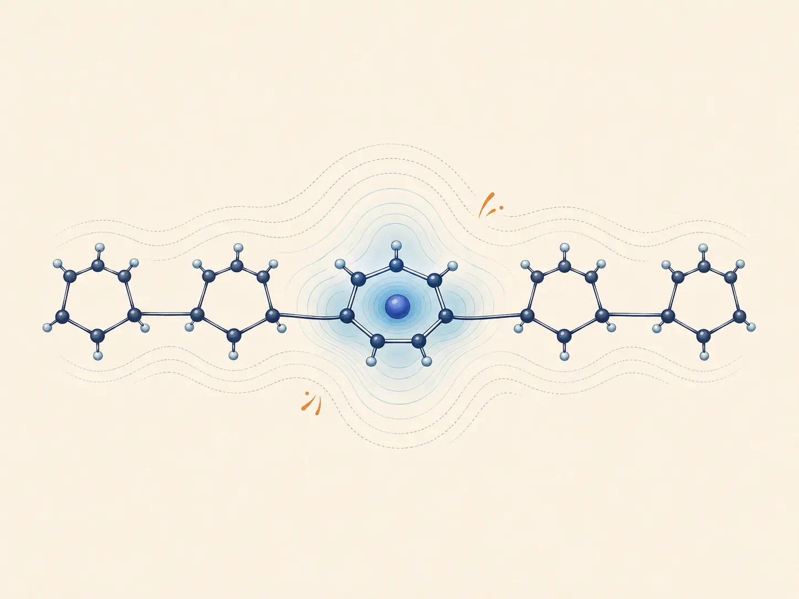
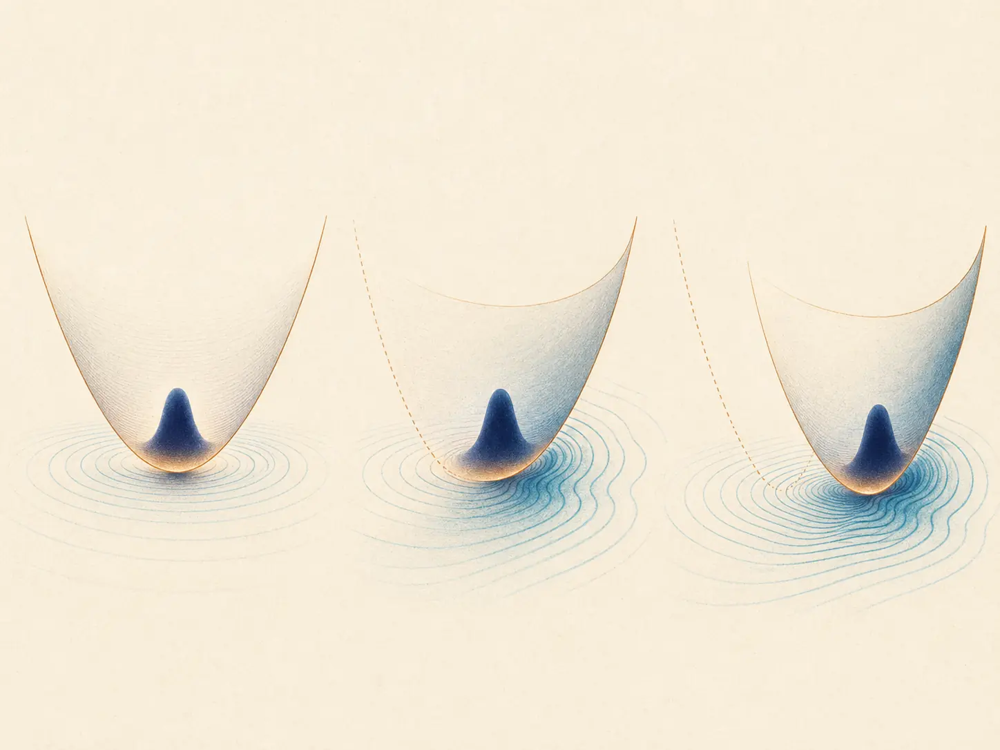
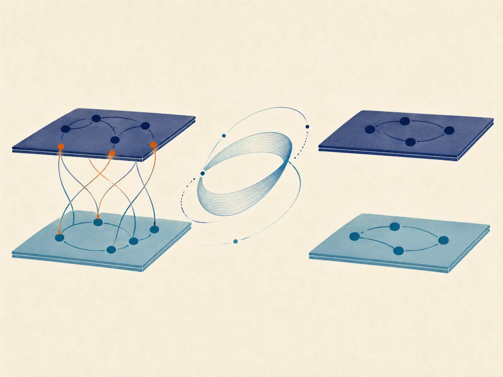

Quantum dynamics · Interactive
Discrete Variable Representation
Build a Fourier-grid DVR, choose a potential and grid, and compare its eigenfunctions.
Open tutorialResearch notes
Tutorials, derivations, worked examples, and interactive calculations that develop each method step by step.
9 notes

Quantum dynamics · Interactive
Build a Fourier-grid DVR, choose a potential and grid, and compare its eigenfunctions.
Open tutorial
Numerical methods · Interactive
Derive the recursion, then propagate a three- or four-level model and inspect the error.
Open tutorial
Numerical methods · Interactive
Construct the DFT matrix, follow each radix-2 stage, and inspect a test signal in frequency space.
Open tutorial
Spectroscopy · Interactive
Combine Drude–Lorentz and underdamped Brownian baths, then calculate the resulting lineshape.
Open tutorial
Operator transforms
How a unitary displacement dresses excitons and renormalizes electronic coupling.
Read derivation
Operator transforms
Interpolating between weak and strong coupling through optimized bath displacements.
Read derivation
Operator transforms
Block-diagonalizing coupled Hamiltonians to expose their effective low-energy physics.
Read derivationNo notes match that search. Try another keyword or topic.